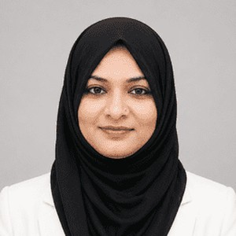

I am a data analyst and learning analytics researcher with a Master's degree in Computer Science, a Bachelor of Education and six years of full-time teaching experience. I use data to understand how people learn and to support better decisions, both in classrooms and in organizations.
My research applies machine learning and explainable AI to learner data, with a focus on tools that teachers can trust and act on. In my analytics work, I build dashboards and reports with Microsoft Excel, SQL, Python, Tableau and Power BI. I live in Oyama, Tochigi, Japan.
I hold a Master of Science in Computer Science and a Bachelor of Education, which give me both technical expertise and strong communication skills. I taught Computer Science full-time at secondary-school level from 2017 to 2023, where I was responsible for curriculum planning, student assessment and integrating technology into lessons.
From 2023 to 2025, I took part in the Japanese Government's MEXT Teacher Training Program at Aichi University of Education. There I gained international experience and a deeper understanding of modern teaching methods and digital tools, which strengthened my adaptability, cross-cultural communication and problem-solving.
Since 2025, I have worked as an independent researcher in learning analytics and explainable AI in education. See Research & Publications.
I focus on creating clear, insightful dashboards that help stakeholders make informed decisions. My projects show how I analyze business data, track KPIs and present findings in a structured, professional way.
I have lived and studied in Japan since 2023, which has broadened my cultural awareness and adaptability. I work in English (all three of my degrees were taught in English), speak German at B1 level and am continuing to improve it.
I am seeking PhD positions, research collaborations and visiting-researcher opportunities in learning analytics and AI in education, as well as data-analysis roles where I can turn data into actionable insights. My combination of technical skills, classroom experience and international exposure lets me bring a distinctive perspective to any team.
Get in Touch